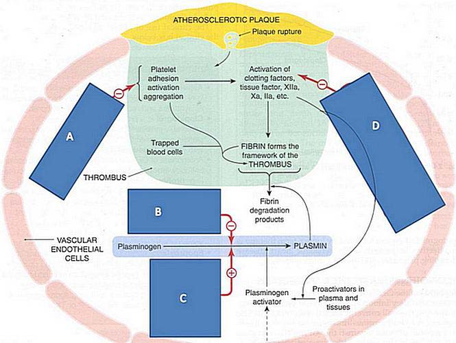
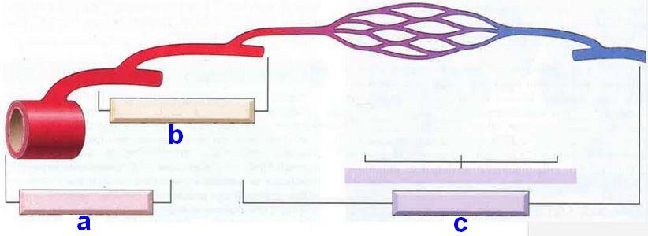
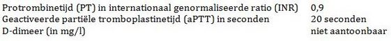
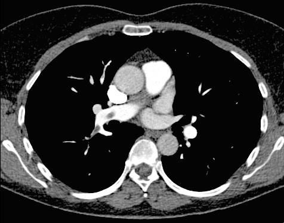
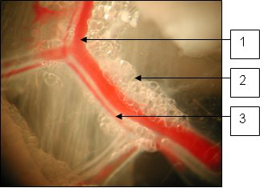
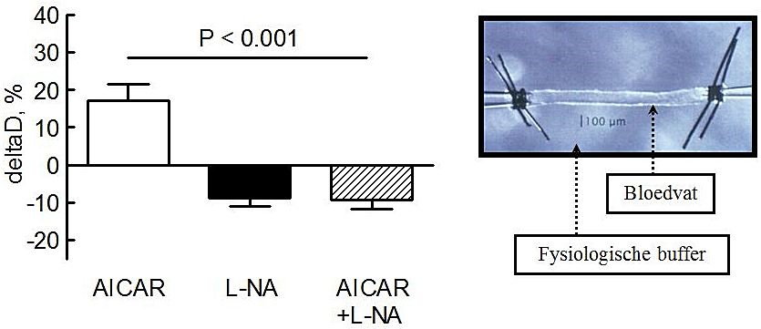
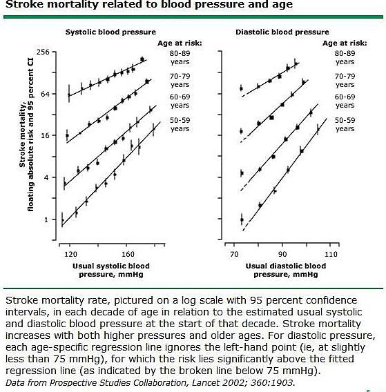

Vraag 1
Kies de juiste alternatieven.
Een zwangere vrouw komt bij 21 weken zwangerschapsduur bij de huisarts. Zij stelt hypertensie vast. Over de uitslag van het urineonderzoek is nog niets bekend. De meest voorkomende oorzaak is nu .
Vraag 2
Een zwangere vrouw is bekend met hypertensie. De duur van de zwangerschap is 28 weken. Bij het meten van de bloeddruk gebruikt de huisarts de auscultatoire methode.
Bij welke fase van de korotkov-tonen wordt de diastolische bloeddruk in dit geval het best weergegeven?
Vraag 3
Je werkt als internist en de ziekenhuisdirectie vraagt je advies te geven over medicijn X. Medicijn X voorkomt hart- en vaatziekten. In de literatuur vind je een RCT met medicijn X vergeleken met een placebo P. De volgende resultaten zijn beschikbaar:
1) medicijn X (n = 2400), aantal mensen met hart- en vaatziekten 50, mensen met bijwerkingen 10
2) placebo P (n = 2400), aantal hart- en vaatziekten 100, mensen met bijwerkingen 2
1) medicijn X (n = 2400), aantal mensen met hart- en vaatziekten 50, mensen met bijwerkingen 10
2) placebo P (n = 2400), aantal hart- en vaatziekten 100, mensen met bijwerkingen 2
Hoeveel patiënten moeten worden behandeld (number needed to harm; NNH) met medicijn X in vergelijking met placebo P om bij één patiënt een bijwerking te hebben veroorzaakt? Geef het weer in een getal.
Modelantwoord
300
Bijwerkingen bij X = 10/2400 = 0,417%. Bijwerkingen bij placebo = 2/2400 = 0,083%. Absolute risicotoename = 0,417% − 0,083% = 0,333%. NNH = 1 / 0,00333 ≈ 300.
Vraag 4
Bij een man schat u op grond van leeftijd (65 jaar), bloeddruk (190/98 mmHg) en natuurlijk het geslacht het cardiovasculair risico hoog in. Patiënt blijkt te roken en ook in de familie komen veel hart en vaatziekten voor (broer hartinfarct op 54-jarige leeftijd, en vader overleed op 49-jarige leeftijd aan plotse hart-dood). U wilt hem een statine voorschrijven. Patiënt vraagt of het niet eerst nodig is te weten hoe hoog het 'slechte cholesterol' is.
Het correcte antwoord op die vraag is:
Vraag 5
Een patiënte van 59 jaar heeft oedeem aan de benen door recidiverende veneuze trombose met klepdestructie.
Welke behandeling is hiervoor aangewezen?
Vraag 6
Een man van 62 jaar komt op het spreekuur van de vaatchirurg in verband met buikpijn, optredend vrij snel na de maaltijd, en in de uren daarna spontaan afzakkend. Overigens heeft hij ook claudicatio intermittens. Van de huisarts had hij aspirine gekregen (slikt hij vrijwel dagelijks), het advies om dagelijks te blijven lopen (doet hij trouw) en het advies om te stoppen met roken (dat lukt niet: hij rookt al 42 jaar ongeveer 5 sigaretten per dag). Bij laboratoriumonderzoek wordt een bezinking van erytrocyten van 11 mm/uur (BSE) gevonden, en daarnaast zijn de antinucleaire factoren (ANA) niet aantoonbaar.
Welke diagnose past het beste bij de buikklachten van patiënt?
Vraag 7
Een vrouw van 32 jaar heeft in de voorgeschiedenis tweemaal diep-veneuze trombose meegemaakt. Uit het destijds verrichte bloedonderzoek (dus VOORdat anticoagulantia werden gegeven) kwamen de volgende stoltijden: protrombinetijd (PT) 1,1 INR (international normalised ratio); geactiveerde partiële tromboplastinetijd (aPTT) 61 seconden. Op 22-jarige leeftijd maakte patiënte een spontane abortus mee.
Aan welke onderliggende oorzaak voor het bestaan van de recidiverende trombose moet nu worden gedacht op grond van deze gegevens?
Vraag 8
Op de intensive care wordt een patiënt in verband met longembolieën met rivaroxaban behandeld.
Moet het effect van de behandeling nu worden gevolgd met het dagelijks bepalen van stollingstijden?
Vraag 9
Bij het zo effectief mogelijk afhandelen van een intercollegiaal consult is het verstandig een aantal regels in acht te nemen.
Welke van onderstaande kort geformuleerde regels draagt bij aan een effectieve consultafhandeling?
Vraag 10
Kies de juiste alternatieven.
Er komt een patiënte laat in de middag bij u in de huisartsenpraktijk met de verdenking op een trombosebeen. Bij toepassen van de regel van Wells komt u slechts uit op een lage voorafkans (de score is 1). Wat is nu een correcte handelwijze? Nadere diagnostiek dient nu als eerste te geschieden met .
Vraag 11
Een patiënte van 84 jaar met in de voorgeschiedenis een transient ischemic attack (TIA) wordt opgenomen voor een electieve (dat wil zeggen NIET-spoedeisende) knieoperatie. Zij meldt bij opname dat zij hedenochtend zijn laatste clopidogrel heeft gebruikt.
Wat is nu een correcte handelwijze, met het oog op het optimaliseren van de peri- en postoperatieve hemostase?
Vraag 12
Kies de juiste alternatieven.
Een jonge vrouw komt heftig kortademig aan op Schiphol vanuit Nieuw Zeeland. In het laatste uur van de vlucht zijn de klachten begonnen. Zij heeft voor het overige een blanco medische voorgeschiedenis. U denkt, als arts werkzaam bij de medische dienst Schiphol, natuurlijk aan een longembolie. Bij lichamelijk onderzoek vindt U een bloeddruk van 136/88 mmHg en een polsfrequentie van 108/min. Met behulp van andere items uit het lichamelijk onderzoek probeert u de ernst van eventuele longembolieën in te schatten. De bevinding zou in dit geval het meest wijzen op een hemodynamisch relevante obstructie van de pulmonale circulatie.
Vraag 13
Een patiënt van 68 jaar komt bij u op het spreekuur in verband met klachten die doen denken aan claudicatio intermittens van het linker been. U meet een Enkel/Arm (E/A)-index; links is hij 0,5 rechts is hij 1,0. De pulsaties aan de a. tibialis zijn links niet goed palpabel. In het rechter been zijn alle arteriën goed te voelen.
Hoe interpreteert u deze gegevens in het licht van de klachten van patiënt?
Vraag 14

Bovenstaande figuur is een schematische weergave van farmacologische mogelijkheden om atherotrombose te beïnvloeden. Een rode pijl met een – erin betekent 'remt', een rode pijl met + erin betekent 'stimuleert' of 'katalyseert'. Hieronder worden vier geneesmiddelen genoemd. Kies bij ieder geneesmiddel de corresponderende letter uit de figuur.
Sleep een optie naar de bijbehorende rij, of tik eerst op een kaart en dan op een rij.
Alteplase (ook wel recombinant tPA genoemd)
Sleep hier naartoe
Dipyridamol
Sleep hier naartoe
Heparine
Sleep hier naartoe
Tranexaminezuur
Sleep hier naartoe
Vraag 15
Een vrouw van 57 jaar heeft buikpijn die het meest doet denken aan urolithiasis. Bij echografie van de bij wordt toevallig een aneurysma van de abdominale aorta vastgesteld. De bloeddruk blijkt bij herhaling normaal te zijn (driemaal op verschillende tijdstippen gemeten: 118/68; 122/80; 116/76 mmHg). De diameter is op 3,7 cm.
Wat is nu het aangewezen vervolgbeleid?
Vraag 16
Een 62-jarige man die al 30 jaar rookt, heeft langzaam toenemende pijn in zijn rechter onderbeenbeen die verergeren bij lopen (na ongeveer 1 kilometer) en direct verdwijnen in rust. Bij lichamelijk onderzoek valt op dat de arteriële pulsaties in rechter lies, knie en aan de rechter voet moeilijk palpabel zijn. Links zijn pulsaties goed te voelen.
Wat is nu de aangewezen behandelmethode?
Vraag 17
Aangeboren hartafwijkingen kunnen in de vroege kinderjaren succesvol worden verholpen door de kinderhartchirurg en haar team. Met betrekking tot de lange termijn follow-up geldt dat op de volwassenleeftijd bij deze mensen vrijwel geen complicaties optreden.
Deze bewering is:
Vraag 18
Hartfalen kan zich op de kinderleeftijd onder andere door groeivertraging manifesteren.
Deze bewering is:
Vraag 19
Niet ieder hartgeruis op de kinderleeftijd wijst op een ernstige aandoening van het hart.
In welke situaties is er meestal sprake van een onschuldig geruis? Kies er drie. Een geruis…
Meerdere antwoorden mogelijk.
Vraag 20

Zie bovenstaande figuur (a = grote arterie, b = kleine/middelgrote arterie, c = capillair/venulair traject). Kies bij elke vasculitis de juiste plek in de figuur.
Arteriitis temporalis
Henoch Schönlein purpura
Microscopische polyangiitis
Polyarteritis nodosa
Takayasu vasculitis
Vraag 21
Hypertensie is deels een aandoening die genetisch bepaald is. Dit blijkt onder meer uit onderzoek onder tweelingen. Bewering: bij monozygote tweelingen is de correlatiecoëfficiënt voor bloeddruk groter dan bij dizygote tweelingen.
Deze bewering is:
Vraag 22
Kies de juiste alternatieven.
Bij een patiënte van 34 jaar denkt een internist aan het bestaan van de ziekte van Von Willebrand. Zij heeft last van blauwe plekken, en hevig menstrueel bloedverlies, zich onder andere uitend in een ferriprieve anemie met een [Hb] 4,9 mmol/l. De familie-anamnese voor spontane blauwe plekken is positief. Al met al beschouwt hij de voorafkans op het bestaan van de ziekte van Von Willebrand ongeveer 40%. De internist besluit een bloedingstijd aan te vragen om de diagnose ziekte van Von Willebrand uit te sluiten. De uitslag van de bloedingstijdtest is 5 minuten (normaal kleiner dan 8,5 minuten). De specificiteit van de bloedingstijd is 97,5%, de sensitiviteit 50%. Wat is nu de kans dat patiënte deze ziekte ondanks de uitslag van de bloedingstijd toch heeft? Ongeveer .
Vraag 23
Cardiovasculair risicomanagement (CVRM) bij ouderen is soms ingewikkelder dan bij jongeren, onder andere door het bestaan van comorbiditeit. De interventies hebben soms een negatief effect op het beloop van de comorbide ziekte. Eén van de interventies is het voorschrijven van antihypertensiva.
Welke twee comorbiditeiten nemen hierdoor soms in ernst toe?
Meerdere antwoorden mogelijk.
Vraag 24
Een pasgeborene heeft bij het verliezen van de navelstrengstomp een behoorlijke navelbloeding. De kinderarts verricht aanvullend onderzoek in de richting van een aangeboren afwijking in de plasmatische stolling (secundaire hemostase). Hieronder de uitslagen (PT/INR 0,9; aPTT 20 seconden; D-dimeer niet aantoonbaar).
Bij welke afwijking in de plasmatische stolling (secundaire hemostase) passen bovenstaande gegevens?

Vraag 25
Een bijwerking van antihypertensiva is hyperkaliemie.
Welke drie van onderstaande klassen antihypertensiva staan hier vooral om bekend?
Meerdere antwoorden mogelijk.
Vraag 26
Dreigende spontane vroeggeboorte. Selecteer drie tekenen van een spontane vroeggeboorte bij een vrouw die 32 weken zwanger is:
Meerdere antwoorden mogelijk.
Vraag 27
Longembolie op CT-scan. Op deze CT-scan van de thorax is een longembolie zichtbaar, die 2× wordt 'aangesneden'. Versleep (in het originele TestVision-item) het rode kader zodanig, dat de longembolie zich binnen dit kader bevindt. Beschrijf waar de longembolie zich bevindt.

Modelantwoord
De longembolie bevindt zich centraal in de rechter longslagader (a. pulmonalis rechts), net rechts van de mediastinale vaten. In het originele TestVision-item sleep je het rode kader over dat gebied (rechthoek ± 140,175 – 204,240). De embolie wordt op deze coupe tweemaal aangesneden en is met twee rode pijlen aangegeven.
Vraag 28
Kriebelhoest door ACE-remmer. Een 45-jarige vrouw, bekend met mild asthma bronchiale waarvoor ze niet behandeld wordt, krijgt in verband met hypertensie (160/100 mmHg) een ACE-remmer voorgeschreven. De bloeddruk daalt hierop fraai, maar ze ontwikkelt een kriebelhoest.
Nu kan het beste
Vraag 29

Foto: m. cremaster van een obese rat - uitvergroting van het proximale gedeelte van deze spier (structuren genummerd 1, 2 en 3). Wat hoort bij wat?
Sleep een optie naar de bijbehorende rij, of tik eerst op een kaart en dan op een rij.
arteriole
Sleep hier naartoe
perivasculair vetweefsel
Sleep hier naartoe
venule
Sleep hier naartoe
Vraag 30
Antistollingstherapie. Bij een aantal vormen van antistollingstherapie moet het effect worden gemonitord. Hoe dient deze monitoring plaats te vinden? (PT: protrombinetijd; APTT: geactiveerde partiële tromboplastinetijd; INR: internationaal genormaliseerde ratio)
coumarinederivaat (oraal)
heparine (intraveneus)
gefractioneerde heparine (subcutaan)
dabigatran (oraal)
Vraag 31
De arts gebruikt de communicatieve 'judo'-techniek als deze tijdens een consult
Vraag 32
Onderstaande items horen bij 'consultatie' of bij 'samenwerking in multidisciplinaire teams'. Kies bij elk item de juiste categorie.
collectieve besluitvorming
consultvrager beslist na consultatie
informatie en advies op verzoek om consultvrager te ondersteunen
in multidisciplinaire teamvergaderingen
partnerschap bij probleem oplossen en besluitvorming
reciproque relaties tussen medische professionals
sequentiële relatie tussen medische professionals
vaak in een-op-een situatie
Vraag 33
Bovenstaande figuur toont de respons van een geïsoleerd bloedvat in een zogenaamde drukmyograaf-opstelling op verschillende farmacologische ingrepen. Deze respons is een diameterverandering (deltaD), die wordt uitgedrukt als percentage van de diameter van het bloedvat. Een positieve verandering betekent vaatverwijding, een negatieve betekent vaatvernauwing. De vraagstelling van de proef was of AICAR, een stof die de effecten van sport nabootst, vaatverwijding induceert en of het eventuele effect afhankelijk was van de productie van NO. Daartoe werd het bloedvat blootgesteld aan: 1. AICAR; 2. L-NA, stof die de synthese van NO remt; 3. AICAR in combinatie met L-NA.
Welke bewering(en) is/zijn juist?

Meerdere antwoorden mogelijk.
Vraag 34
De arteriële drukgolf is een optelsom van de voorwaartse drukgolf en teruggekaatste drukgolven.
Welke bewering is juist?
Vraag 35
Welke van onderstaande categorieën aandoeningen is/zijn een mogelijke oorzaak van hartfalen? Kies het volledigste antwoord.
Vraag 36
Een aortaklepstenose is samen met een mitralisklep insufficientie het meest voorkomende klepvitium.
Wat is geen operatie-indicatie bij een ernstige aortaklepstenose?
Vraag 37
Een hypertrofische cardiomyopathie is de meest voorkomende genetische cardiomyopathie in Nederland. Er zijn meerdere redenen waarom jonge sporters (<40 jaar) met deze ziekte acute hartdood kunnen ervaren op het sportveld.
Wat is het meest waarschijnlijke mechanisme?
Vraag 38
Welke stelling over congenitale hartafwijkingen is juist?
Vraag 39
Kies de juiste alternatieven.
De intrinsieke frequentie van de pacemakercellen in de sinusknoop bedraagt slagen per minuut.
Vraag 40
Het hart doorloopt tijdens een hartcyclus een aantal stadia. Zet de volgende stadia uit deze cyclus in de juiste volgorde (kies bij elke stap de bijbehorende fase).
Sleep een optie naar de bijbehorende rij, of tik eerst op een kaart en dan op een rij.
Stap 1
Sleep hier naartoe
Stap 2
Sleep hier naartoe
Stap 3
Sleep hier naartoe
Stap 4
Sleep hier naartoe
Vraag 41
Therapieresistente hypertensie is gedefinieerd als een ongecontroleerde bloeddruk ondanks behandeling met maximaal verdraagbare doseringen van 3 bloeddrukverlagende medicijnen (ACE-remmer of ARB + calciumantagonist (CCB) + thiazide Diureticum, A + C + D).
Het medicijn dat het meest effectief is in het verlagen van de bloeddruk dat nu dient te worden toegevoegd is
Vraag 42
Analyseer de figuur hierboven, waarin de effecten van verschillende leefstijlfactoren op het risico op een acuut myocardinfarct worden weergegeven voor mannen en vrouwen. Stel dat uw vader niet sport, 1-2 stuks fruit per week eet, een bloeddruk van 155/85 heeft die nog niet wordt behandeld, een waist-hip ratio van 1.1 bij een BMI van 29.0 heeft en elke dag een biertje en een borrel drinkt.
Als u uw vader een leefstijladvies zou mogen geven en hij dat ook opvolgt, met welk advies zou zijn gemiddelde risico op een acuut myocardinfarct het meest afnemen?

Vraag 43
Het risico op een herseninfarct (stroke) is onder andere afhankelijk van leeftijd en bloeddruk. Bestudeer bovenstaande figuur (stroke mortality gerelateerd aan bloeddruk en leeftijd; log-schaal).
Wie van bovenstaande personen heeft het hoogste risico om te overlijden aan een stroke?

Vraag 44
Stel dat het risico op een myocardinfarct in de komende 10 jaar in patiënten met type 2 diabetes 20% is. Er komt een nieuw glucoseverlagend middel op de markt dat in deze groep patiënten het risico met 50% verlaagt.
Wat is dan voor dit geneesmiddel het number needed to treat?
Vraag 45
De klaring van LDL is kwantitatief afhankelijk van het aantal functionerende LDL-receptoren.
Welke stelling is juist?
Vraag 46
Welke stelling t.a.v. augmentatie is juist?
Vraag 47
Hypertensie is een belangrijke risicofactor voor hart- en vaatziekten.
Welke bewering is juist?
Vraag 48
U besluit een patiënte van 63 jaar met diabetes mellitus type 2 in het kader van primaire preventie van hart en vaatziekten te willen behandelen. Zij heeft een verhoogde bloeddruk (155/85 mmHg), een LDL van 5,2 mmol/l, heeft overgewicht (BMI 33 kg/m²), en haar HbA1c is 7,5%.
Indien u slechts een risicofactor zou mogen aanpakken, welke interventie zou het effectiefst zijn in het voorkomen van een hartinfarct?
Vraag 49
Een patiënt van 37 jaar wordt vanwege hoge bloeddruk naar de polikliniek interne geneeskunde verwezen. De huisarts had hem behandeld met een combinatie van een calciumantagonist (nifedipine) en een alfablokker (doxasozine), maar de bloeddruk bleef op een niveau van rond 170/112 mmHg. Patiënt rookt één pakje sigaretten per dag, en bij eerder onderzoek is nooit een verhoogde bloeddruk gevonden. Hij heeft geen aanvalsgewijze klachten en gebruikt geen overmatige hoeveelheden drop. Evenmin gebruikt hij cocaïne. Hij is niet adipeus, hij heeft geen livide verkleurde striae noch een vollemaansgezicht, noch vetstapeling in de hals. Hij heeft liggend een bloeddruk van 190/108 rechts en 180/104 mmHg links, met een regulaire pols van 80 min. Er werden bij het verdere lichamelijk onderzoek geen afwijkingen gevonden. Bij laboratoriumonderzoek was de plasmaconcentratie van kalium 3,1 mmol/l. Plasmaglucose (niet nuchter) is 6,8 mmol/l. Er waren geen afwijkingen in het lipidenspectrum, de endogene creatinineklaring is 83 ml/min en er is geen proteïnurie. Het urinesediment toonde geen afwijkingen.
Wat is de beste volgende stap om te komen tot het achterhalen van de oorzaak van deze vermoedelijk secundaire hypertensie?
Vraag 50
De bloeddruk en het circulerend volume worden zoveel mogelijk op peil gehouden door verschillende compensatiemechanismen.
Welke hiervan zorgt voor herstel van de bloeddruk binnen 1 minuut na een bloeddrukverandering?